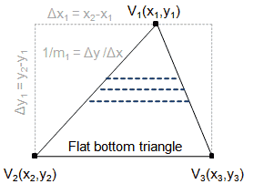
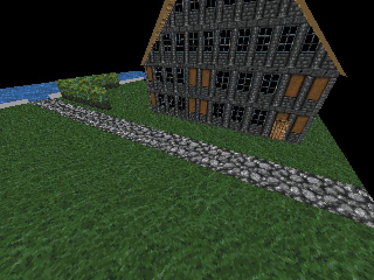

A variant of Bresenham's line algorithm for edge walk triangle rasterization
One way to rasterize triangle-based geometry is to use the edge walk method (sometimes also incorrectly referred to as the scanline method). Line by line, we find the line segments bounding our triangle, and we walk along them to determine which pixels of each line are covered by the triangle.

I will not repeat the basic ideas (sorting vertices by Y, decomposition into a flat bottom triangle and a flat top triangle) – a good explanation can be found, for example, on Sunshine’s website. In this post I want to focus solely on how to correctly use Bresenham’s line drawing algorithm to walk the triangle edges.
Coverage rules!
Drawing one triangle is an easy case, and off-by-one errors won’t be noticed so easily; furthemore, in absence of anti-aliasing, there can be ambiguity about whether certain edge pixels should be filled or not.
Once having more complex geometry, though, coverage rules become important to ensure that there will be no gaps in the rasterized geometry. It is desirable to also avoid the opposite (one pixel being covered by two adjacent faces), because it is slightly wasteful, and can lead to ugly flickering artifacts as the camera moves around the scene.
For Microsoft’s Direct3D 11 graphics API, there is excellent documentation of the conventions that it follows, quoted below. We shall assume that conventions adopted by an industry-embraced rendering API for desktop gaming are sound enough for our purpose.

Any pixel center which falls inside a triangle is drawn; a pixel is assumed to be inside if it passes the top-left rule. The top-left rule is that a pixel center is defined to lie inside of a triangle if it lies [entirely within the triangle, i.e. not touching any of the edges, or] on the top edge or the left edge of a triangle.
Where:
- A top edge, is an edge that is exactly horizontal and is above the other edges.
- A left edge, is an edge that is not exactly horizontal and is on the left side of the triangle. A triangle can have one or two left edges.
The top-left rule ensures that adjacent triangles are drawn once.
Let us now formulate the task more specifically:
- triangle given by integer coordinates $(X_1, Y_1)$, $(X_2, Y_2)$, $(X_3, Y_3)$ in screen space
- no subpixel precision, sorry (maybe next time?)
- viewport originating in the top-left corner, X+ pointing right, Y+ pointing down
- scan the triangle edges line by line
- for each pixel row $Y$, determine $X_{start}, X_{end}$, to fill pixels satisfying $X_{start} \le X \lt X_{end}$ (note the assymmetry here) compliant with Triangle Rasterization Rules (Without Multisampling) of Direct3D 10/11
- no floating-point operations and no integer division
Note: I use capital letters to denote integer coordinates, e.g. those lying in the top-left corner of a pixel. Lowercase letters represent general coordinates which might lie in the pixel’s top-left corner, in its center, or anywhere else.
Line discretization
Based on the coverage rules, we can now form a mathematic description of the problem, and re-derive our own Bresenham-like algorithm.
An important realization here is that, although we specify vertex coordinates at pixel corners, the sampling points are in pixel centers. If we describe the triangle edges with their explicit equations (expressing $x$ as a function of $y$), the coverage rule can be re-formulated as follows:
- with respect to the left edge of the triangle, the center of pixel $(X, Y)$ is inside the triangle if it lies on, or to the right of the edge at $Y + 0.5$, e.g. if $X + 0.5 >= x_{left}(Y + 0.5)$.
- with respect to the right edge of the triangle, the center of pixel $(X, Y)$ is inside the triangle if it lies to the left of the edge at $Y + 0.5$, e.g. $X + 0.5 < x_{right}(Y + 0.5)$.
For a line defined by points $a=(x_a, y_a), b=(x_b, y_b)$, the explicit function can be obtained as:
(This function exists as long as the line is not horizontal, e.g. $y_a \ne y_b$, and when processing the edges of flat-top and flat-bottom triangles, we will not encounter any horizontal lines except in degenerate cases.)
This representation gives us a lot of power; given the bounding line in screen space and an $y$-cordinate, we can for example find the left-most filled pixel ($X_{left}$) by determining the smallest integer $X_{left}$ that satisfies the inequality
(Note that this calculation can be also performed with sub-pixel precision.)
An efficient algorithm
Of course, as said above, we don’t want no stinkin’ division (nor fractional numbers), so the initial equation will need some rework. First we will discuss the left bounding line segment and assume that $x_b \ge x_a$ and $y_b > y_a$, e.g. we are going left to right, top to bottom. Let’s start by un-generalizing some of the variables: we snap the line vertices to pixel corners, and we test at pixel-center y-coordinates.
Now we can proceed to eliminate the fractional values and division operation.
Our goal here is to arrive at an inequality that can be tested for a candidate $X_{left}$, plus a recipe to adjust this $X_{left}$ until the inequality holds, starting at $X_a$. Thus we need to separate the term dependent on $(X_{left} - X_a)$:
At the same time, since we need to track the line over a range of $Y$ coordinates, it will be also useful to extract the term dependent on $(Y - Y_a)$:
Alright – now we can use the insight of Dr. Bresenham to convert the inequality into an iterative algorithm!
In the starting point $(X_a, Y_a)$ we store the left side of the inequality into an “error accumulator” variable:
E := (Y_b - Y_a) - (X_b - X_a)
Then, we check whether $E \ge 0$. If this is not the case, we are “lagging behind” the line (we said the line was going left to right, and we start at the left-most, top-most point). Thus, we have to increase $X_{left}$ and correspondingly adjust the error accumulator by the x-dependent term of the line inequality. Then we check again and repeat the cycle as many times as needed.
while E < 0:
X_left := X_left + 1
E := E + 2 * (Y_b - Y_a)
At this point our $X_{left}$ is valid and we can process one line of the triangle. When done, we will proceed to the next line (until we reach the end of the triangle). Again we must not forget to adjust the error term.
Y := Y + 1
E := E - 2 * (X_b - X_a)
In sum, the structure of the code to scan one edge might look like this:
int E = (Y_b - Y_a) - (X_b - X_a);
int X_left = X_a;
for (int Y = Y_a; Y < Y_b; Y++) {
while (E < 0) {
X_left ++;
E += 2 * (Y_b - Y_a);
}
...per-line processing goes here...
E -= 2 * (X_b - X_a);
}
Right edge
Now, what about the right edge of the triangle? The answer is actually hidden in what was said at the beginning. Between adjacent faces, there shall be neither any gaps, nor overlap. That means that the right edge of face A has to be calculated in exactly the same way as the left edge of face B, but shared pixels ought to be covered by only one of the faces. The consequence is that we scan the right edge in the same way as the left edge, and we only fill pixels where $X < X_{right}$.
(Note that this alone doesn’t guarantee pixel-perfect rendering of adjancent faces. We must also ensure that the geometry doesn’t contain any T-junctions and that the vertices of adjacent faces are bitwise-equal. The latter requirement matters for numeric format that permit multiple encodings of the same numeric value, such as de-normalized IEEE 754 floats.)
Going Negative
We have now solved the case of $x_b \ge x_a$. How do we deal with the opposite?
Again, we must satisfy the inequality
but this time the worry is not that “the edge will run away to the right”; instead, it can happen that “we will not be in the leftmost possible position”. An intuitive solution is then to check one pixel to the left (so $X_{left} - 0.5$), and keep decreasing $X_{left}$ until that test pixel is just barely out of bounds.
This is different from what most “Bresenham tutorials” on the internet will tell you to do – but it is crucial for ensuring that only pixels lying in the triangle (those with barycentric coordinates $s \ge 0, t \ge 0, s + t \le 1$) will be filled, which in turn is important for per-pixel interpolation of values like texture coordinates.
In our algorithm, we can simply include a bias in the initialization of the error term. We pre-subtract one worth of x-increment, which is $2(Y_b - Y_a)$. In terms of code:
int E = -(Y_b - Y_a) - (X_b - X_a);
int X_left = X_a;
for (int Y = Y_a; Y < Y_b; Y++) {
while (E >= 0) {
X_left --;
E -= 2 * (Y_b - Y_a);
}
...per-line processing goes here...
E -= 2 * (X_b - X_a); // note that the right-side expression
// is now negative, so we *increase* E
}
But does it work?
Well, what could be better proof than a screenshot of the algorithm in action?!
